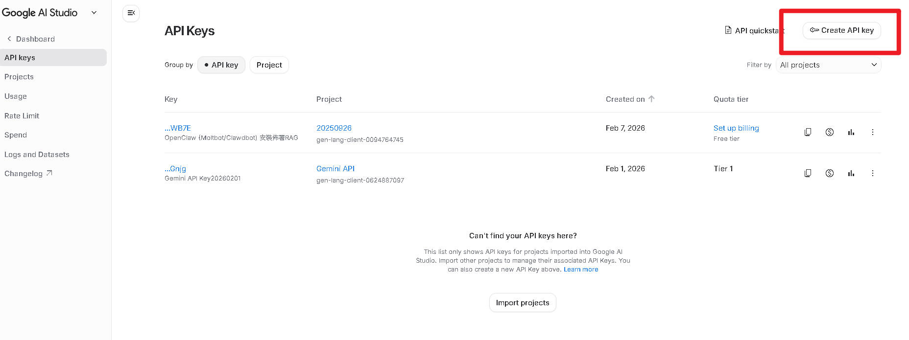
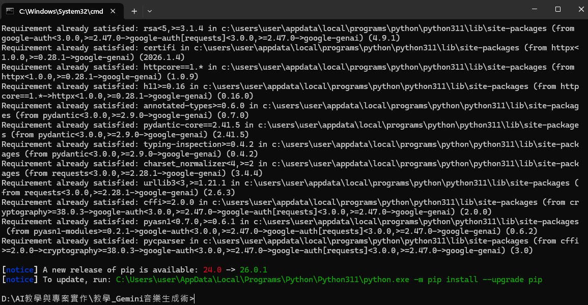
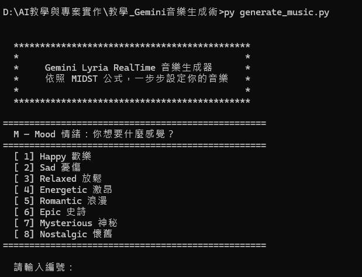
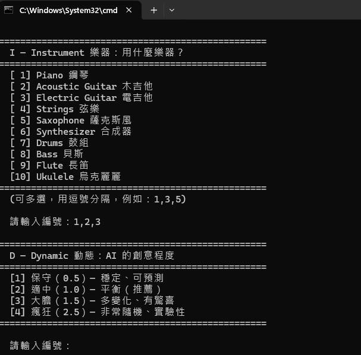
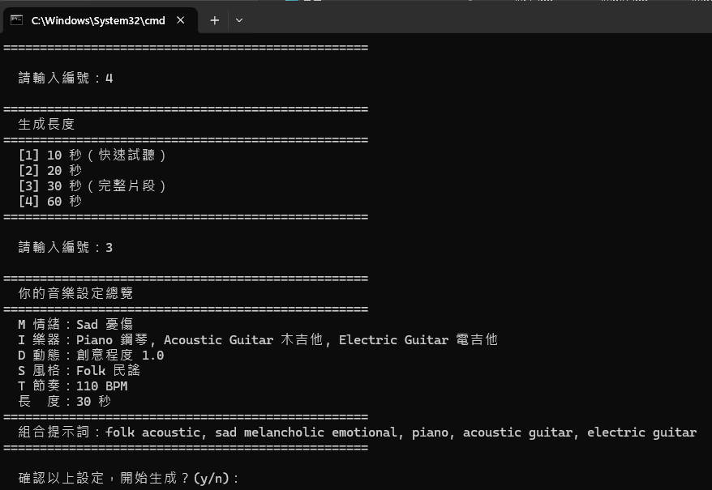
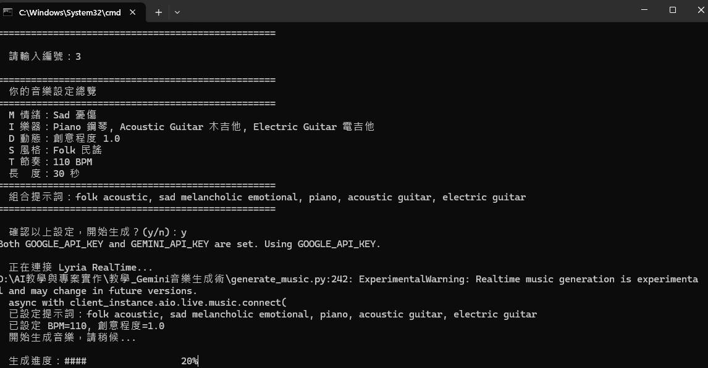
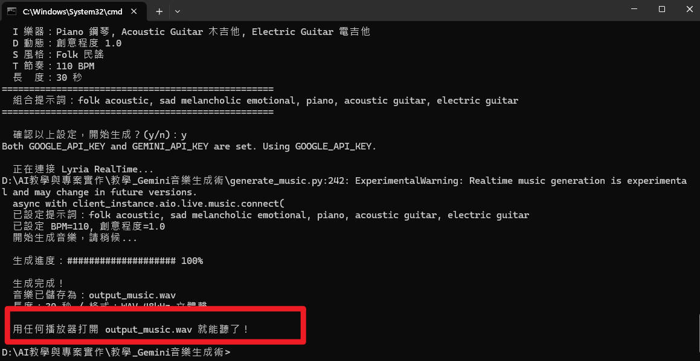
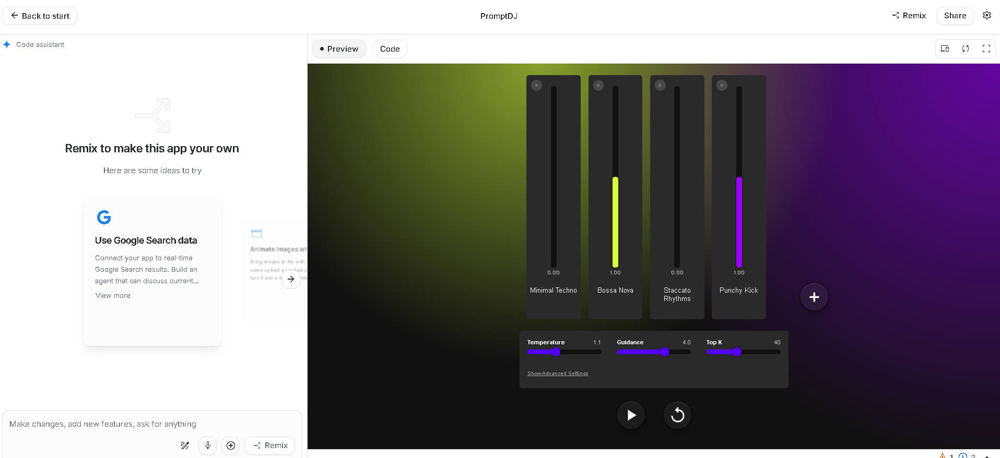
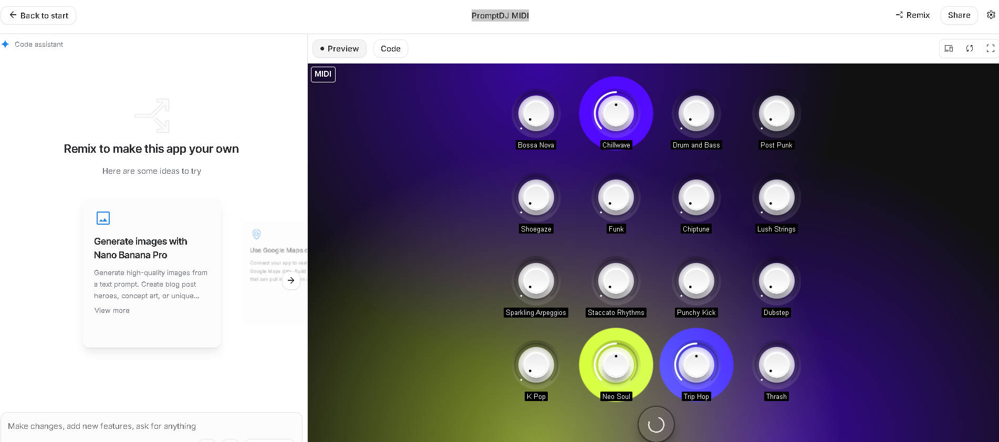

API 開發者進階玩法
用程式碼打造互動式音樂生成器
Lyria RealTime 完整規格
Google 提供的即時音樂生成 API，透過 WebSocket 連線實現低延遲的串流音樂輸出，專為開發者打造的互動式音樂引擎。
| 項目 | 規格 | 備註 |
|---|---|---|
| 模型名稱 | models/lyria-realtime-exp | 實驗版（exp = experimental） |
| 連線方式 | WebSocket 雙向即時通訊 | 低延遲、持續串流 |
| 輸出格式 | 原始 16-bit PCM | 無壓縮，最高品質 |
| 取樣率 | 48,000 Hz（48kHz） | CD 音質為 44.1kHz |
| 聲道 | 立體聲（Stereo） | 左右雙聲道 |
| 延遲 | 控制變更到效果 ≤ 2 秒 | 近乎即時反應 |
| 音樂類型 | 僅支援純器樂 | 人聲功能尚未開放給 API |
| 最長串流 | 持續生成（無硬性上限） | 免費工具限 10 分鐘 |
取得 API 金鑰
要使用 Lyria RealTime API，你需要先取得一組 API 金鑰。以下是詳細步驟：
前往 Google AI Studio
用瀏覽器打開 aistudio.google.com，使用你的 Google 帳號登入。
點擊「Get API Key」
在左側選單或頁面頂部找到「Get API Key」按鈕，點擊進入金鑰管理頁面。
建立新金鑰
點擊「Create API Key」，選擇一個 Google Cloud 專案（或建立新專案），系統會自動產生一組金鑰。
複製並安全保存
金鑰格式類似：AIzaSyB1234567890abcdefg。請立即複製並保存到安全的地方。

.env 檔案管理金鑰。
環境設定：安裝 Python 套件
在寫程式之前，需要先安裝 Google 提供的 GenAI Python SDK。這個套件就像一座橋樑，讓你的 Python 程式可以跟 Lyria RealTime 模型溝通。
安裝指令
打開終端機（命令提示字元 / Terminal），輸入以下指令：
pip install google-genai
看到以下訊息代表安裝成功：
Successfully installed google-genai-x.x.x

常見安裝問題
| 錯誤訊息 | 原因 | 解決方法 |
|---|---|---|
pip 不是內部或外部命令 |
尚未安裝 Python | 到 python.org 下載安裝，記得勾選「Add to PATH」 |
Permission denied |
權限不足 | 改用 pip install --user google-genai |
Could not find a version |
pip 版本過舊 | 先執行 pip install --upgrade pip |
程式碼結構概覽
我們要建立的 Python 程式 generate_music.py，提供兩種模式：「推薦組合」快速生成，或「自訂設定」依 MIDST 公式逐步選擇音樂參數，最終自動組合提示詞並呼叫 API 生成音樂。
程式主選單
推薦組合（快速模式）
提供 6 組經典搭配（咖啡廳 Lo-fi、歡樂流行、史詩配樂、深夜爵士、派對 EDM、浪漫民謠），選一個就能直接生成，適合新手。
自訂設定（MIDST 公式）
依照 MIDST 公式逐步設定各項參數，自由搭配風格與樂器，適合進階玩家。
自訂模式互動流程
情緒
樂器
動態
風格
節奏
生成
每個步驟的選項數量
M - Mood 情緒
8 種選項：歡樂、憂傷、放鬆、激昂、浪漫、史詩、神秘、懷舊
I - Instrument 樂器
10 種選項（可多選，最多 3 個）：鋼琴、木吉他、電吉他、弦樂、薩克斯風、合成器、鼓組、貝斯、長笛、烏克麗麗
D - Dynamic 動態
4 種選項：保守（0.5）、適中（1.0）、大膽（1.5）、極端（2.0）。新手建議選「適中」。
S - Style 風格
10 種選項：流行、搖滾、爵士、EDM、古典、Lo-fi、嘻哈、R&B、民謠、環境音樂（附建議 BPM 與情緒搭配）
T - Tempo 節奏
7 種預設 + 自訂：60/75/90/110/120/140/170 BPM，或自訂 60-200 之間
WeightedPrompt 權重設定
Lyria RealTime API 的核心特色之一是加權提示詞（WeightedPrompt），可以為不同類別的提示詞分別設定權重，讓 AI 更精準地理解你想要的音樂重點。
權重設定原理
每個 WeightedPrompt 包含兩個值：text（提示文字）和 weight（權重 0.0 ~ 1.0）。權重越高，AI 越重視該提示。
# 建立加權提示詞組合 prompts = [ types.WeightedPrompt(text="jazz", weight=1.0), # 風格 - 最高權重 types.WeightedPrompt(text="relaxed calm peaceful", weight=0.8), # 情緒 - 第二優先 types.WeightedPrompt(text="piano", weight=0.6), # 樂器 1 types.WeightedPrompt(text="saxophone", weight=0.6), # 樂器 2 ] # 送出給 API await session.set_weighted_prompts(prompts=prompts)
建議的權重分配策略
| 類別 | 建議權重 | 說明 |
|---|---|---|
| Style 風格 | 1.0 | 最重要，決定音樂的整體方向 |
| Mood 情緒 | 0.8 | 情緒氛圍是次要核心 |
| Instrument 樂器 | 0.6 | 輔助角色，微調音色搭配 |
"electronic ambient" 的權重從 0 增加到 0.5，音樂會平滑過渡到新風格！
可調整參數一覽表
除了提示詞之外，Lyria RealTime API 還提供多個可即時調整的參數，讓你精細控制音樂生成的結果。
| 參數 | 範圍 | 預設值 | 說明 |
|---|---|---|---|
bpm |
60 - 200 | 120 | 每分鐘節拍數，決定音樂速度 |
temperature |
0.0 - 3.0 | 1.0 | 創意多樣性，越高越隨機、越有驚喜 |
guidance |
0.0 - 6.0 | 3.0 | 提示遵從度，越高越嚴格遵循你的提示詞 |
density |
0.0 - 1.0 | 0.5 | 音符密度，0 = 稀疏簡約，1 = 密集豐富 |
brightness |
0.0 - 1.0 | 0.5 | 音色明亮度，0 = 暗沉溫暖，1 = 明亮清脆 |
scale |
列舉值 | 自動 | 音階/調性（如 C major、A minor） |
mute_bass |
True / False | False | 靜音貝斯聲部 |
mute_drums |
True / False | False | 靜音鼓組聲部 |
# 設定生成參數範例 await session.set_music_generation_config( config=types.LiveMusicGenerationConfig( bpm=90, # 節奏：中慢速 temperature=1.0, # 創意度：適中 guidance=3.5, # 提示遵從度：中高 density=0.4, # 音符密度：偏稀疏 brightness=0.6, # 明亮度：略亮 ) )
進階玩法：混合風格
WeightedPrompt 最強大的用法是混合多種風格，透過不同權重比例創造獨特的音樂融合效果。
# 範例 1：爵士 + 電子環境音樂融合 await session.set_weighted_prompts(prompts=[ types.WeightedPrompt(text='jazz piano trio', weight=1.0), types.WeightedPrompt(text='electronic ambient', weight=0.3), ]) # 範例 2：古典 + Lo-fi 跨界混搭 await session.set_weighted_prompts(prompts=[ types.WeightedPrompt(text='classical strings orchestra', weight=0.7), types.WeightedPrompt(text='lo-fi chill beats vinyl', weight=0.5), ]) # 範例 3：動態漸變（播放中修改權重） # 第 0 秒：純爵士 await session.set_weighted_prompts(prompts=[ types.WeightedPrompt(text='smooth jazz', weight=1.0), types.WeightedPrompt(text='EDM drop', weight=0.0), ]) # 第 15 秒：逐漸混入 EDM 元素 await session.set_weighted_prompts(prompts=[ types.WeightedPrompt(text='smooth jazz', weight=0.5), types.WeightedPrompt(text='EDM drop', weight=0.8), ])
執行結果展示


完整執行流程展示
以下是程式從主選單到生成完成的完整互動過程：
********************************************* * * * Gemini Lyria RealTime 音樂生成器 * * 依照 MIDST 公式，一步步設定你的音樂 * * * * 作者：曾慶良（阿亮老師） * * © 2026 僅供課程學員學習使用 * * * ********************************************* 注意：RealTime API 僅支援純器樂生成。 ========================================================== 請選擇模式 ========================================================== [1] 推薦組合（快速模式，適合新手） [2] 自訂設定（MIDST 公式，進階玩家） [3] 人聲功能說明 [4] 關於作者 / 版權聲明 ========================================================== 請輸入編號：1 ========================================================== 推薦組合（選一個直接生成，適合新手） ========================================================== [1] 咖啡廳 Lo-fi — 放鬆的低保真音樂，適合讀書、工作 [2] 歡樂流行曲 — 開朗愉快的流行風格，適合日常背景 [3] 史詩電影配樂 — 壯闘的管弦樂，適合影片、簡報開場 [4] 深夜爵士 — 慵懶的爵士風情，適合夜晚放鬆 [5] 派對電子舞曲 — 高能量 EDM，適合運動、派對 [6] 浪漫民謠 — 溫暖柔和的民謠吉他，適合旅遊 Vlog ========================================================== 請輸入編號：4 ========================================================== 已選擇：深夜爵士 ========================================================== 風格：jazz / 情緒：relaxed calm peaceful 樂器：piano, saxophone, bass BPM：90 / 創意程度：1.0 / 長度：30 秒 ========================================================== 確認開始生成？(y/n)：y 正在連接 Lyria RealTime... 開始生成音樂，請稍候... 生成進度：#################### 100% 生成完成！ 音樂已儲存為：output_music.wav 長度：30 秒 / 格式：WAV 48kHz 立體聲



免費工具 A：Prompt DJ
最簡單的入門方式！打開網頁就能即時操控音樂生成，像 DJ 一樣混音。
基本資訊
- 難度：⭐ 最簡單（零門檻）
- 需求：瀏覽器 + Google 帳號
- 連結：aistudio.google.com/.../promptdj
操作步驟
- 用 Google 帳號登入
- 貼上你的 API 金鑰
- 在提示欄輸入風格，如
jazz piano, relaxed - 按下 Play 開始播放
- 邊播邊改提示詞，音樂會平滑過渡
- 用 BPM / Temperature 滑桿微調


saxophone，再把 piano 換成 guitar），音樂轉場會更自然。
免費工具 B：MIDI DJ
跟 Prompt DJ 功能相同，但額外支援用實體 MIDI 控制器操控參數，適合有硬體設備的使用者。
基本資訊
- 難度：⭐⭐ 中等
- 需求：MIDI 控制器 + Chrome 瀏覽器（支援 Web MIDI API）
- 連結：aistudio.google.com/.../promptdj-midi
操作步驟
- 用 USB 連接 MIDI 控制器到電腦
- 用 Chrome 瀏覽器打開連結
- 允許瀏覽器存取 MIDI 裝置
- 輸入音樂風格，按 Play 播放
- 用旋鈕即時調整 BPM、風格混合比例
- 用按鍵觸發風格切換或靜音樂器

免費工具 C：The Infinite Crate
Google Magenta 團隊推出的免費 DAW 外掛，可在 Ableton Live、Logic Pro 等音樂製作軟體中直接使用 Lyria RealTime。
基本資訊
- 難度：⭐⭐⭐ 進階
- 下載：magenta.withgoogle.com/infinite-crate
支援平台
| Windows | VST3 外掛 / 獨立應用程式 |
| Mac | AU / VST3 外掛 / 獨立應用程式 |
操作步驟
- 下載並安裝對應系統的版本
- 在 DAW 中搜尋並載入外掛
- 第一次開啟時貼上 API 金鑰
- 在提示欄輸入風格，按 Play 生成
- BPM 設為
SYNC可同步 DAW 速度 - 在 DAW 中直接錄製生成的音訊